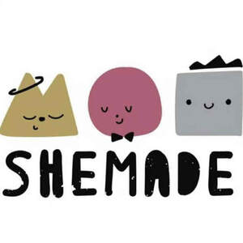

Trade Mark Journal No.2026/007 13 February 2026
UK00004330157 26 January 2026 (11,14,16,26,28)

- Class 11
- Electric fans; Electric cooling fans; Electric bladeless fans; Electric heating fans; Portable electric fans; Electric fans for ventilation; Electric window fans; Wearable electric fans; Fan heaters; Electric fans for household use; Fans (Electric -) for personal use; Electric fans for personal use; Electric fans with evaporative cooling devices; Electric heaters; Electric dehumidifiers; Coolers, electric; Radiators, electric; Electric radiators; Radiant fan heaters; Electric dehydrators; Electric fans [for household purposes]; Portable electric heaters; Electric toasters; Electric grills; Electric humidifiers; Electric cooktops; Electric ovens; Electric rotisseries; Electric roasters; Electric furnaces; Electric lights; Electric air conditioners; Electric kettles; Kettles, electric; Electric cookers; Electric lighting; Electric hobs; Electric immersion heaters; Griddles, electric; Electric griddles; Electric boilers; Electric heating cables; Electric bottle heaters; Electric woks; Woks (Electric -); Electric skillets; Skillets (Electric -); Electric blankets; Electric lamps; Lamps (Electric -); Electric hotplates; Electric beverage heaters; Battery-operated electric candles; Portable electric fires; Propagators [electric]; Electric bulbs; Electric refrigerators; Electric candles; Electric coffeepots; Coffeepots, electric; Electric stoves; Electric water heaters; Electric heating installations.
- Class 14
- Signet rings; Finger rings; Engagement rings; Ring bands [jewellery]; Wedding rings; Rings [trinket]; Rings [jewelry]; Gold-plated rings; Rings [jewellery]; Rings being jewellery; Silver-plated rings; Gold rings; Platinum rings; LED finger ring watches; Silver rings; Eternity rings; Key rings [split rings with trinket or decorative fob]; Key rings; Friendship rings; Body-piercing rings; Charms for key rings; Gold plated rings; Ring holders of precious metal; Rings of precious metal; Key rings of leather; Leather key rings; Key rings, not of metal; Retractable key rings; Decorative key rings; Key chains [split rings with trinket or decorative fob]; Split rings of precious metal for keys; Rings [jewellery, jewelry (Am.)]; Non-metal key rings; Key rings of precious metal; Choker necklaces; Necklace charms; Necklaces; Necklaces [jewelry]; Earrings; Necklaces [jewellery]; Pendants [jewelry]; Silver-plated necklaces; Bracelets [jewelry]; Jewellery rope chain for necklaces; Pendants [jewellery]; Bracelet charms; Silver-plated earrings; Bracelets [jewellery]; Bangle bracelets; Necklaces [jewellery, jewelry (Am.)]; Bib necklaces; Silver necklaces; Gold-plated necklaces; Gold necklaces; Amber pendants being jewellery; Brooches [jewelry]; Jewelry brooches; Brooches being jewelry; Jewelry clips for adapting pierced earrings to clip-on earrings; Silver earrings; Jewellery chain of precious metal for necklaces; Bracelets [jewellery, jewelry (Am.)]; Jewellery rope chain for bracelets; Gold earrings; Bead bracelets; Jewel pendants; Scarf clips being jewelry; Pearls [jewelry]; Gold-plated earrings; Pendants; Charms [jewelry]; Jewelry charms; Charms for jewelry; Clasps for jewelry; Clip earrings; Silver-plated bracelets; Brooches [jewellery, jewelry (Am.)]; Jewellery chain of precious metal for bracelets; Lockets [jewelry]; Pearls [jewellery, jewelry (Am.)]; Charms [jewellery, jewelry (Am.)]; Identification bracelets [jewelry]; Jewellery rope chain for anklets; Brooches [jewellery]; Jewellery brooches; Jewelry; Hoop earrings; Bracelets; Charms [jewellery]; Charms for jewellery; Jewellery charms; Pendant watches; Pearls [jewellery]; Lockets [jewellery, jewelry (Am.)]; Pierced earrings; Jewelry stickpins; Jewelry (Paste -) [costume jewelry]; Paste jewelry [costume jewelry]; Medallions [jewellery, jewelry (Am.)]; Amberoid pendants being jewellery; Clasps for jewellery; Amulets [jewelry]; Jewellery chain; Chains [jewellery, jewelry (Am.)]; Diamond jewelry; Hat jewelry; Jewellery chain of precious metal for anklets; Wristlets [jewellery]; Lockets [jewellery]; Amulets [jewellery, jewelry (Am.)]; Silver bracelets; Ornaments [jewellery, jewelry (Am.)]; Wooden bead bracelets; Bangles; Jewellery in the form of beads; Gold plated brooches [jewellery]; Gold plated earrings; Gold bracelets; Paste jewellery [costume jewelry (Am.)]; Paste jewellery [costume jewelry [Am.]]; Agate as jewellery; Silver thread [jewellery, jewelry (Am.)]; Costume jewelry; Jewelry chains; Chains [jewelry]; Hat jewellery; Identification bracelets of precious metal [jewelry]; Bracelets made of embroidered textile [jewelry]; Trinkets [jewellery, jewelry (Am.)]; Gold thread [jewellery, jewelry (Am.)]; Drop earrings; Pewter jewellery; Jade [jewellery]; Pins [jewellery, jewelry (Am.)]; Amulets being jewellery; Amulets [jewellery]; Beads for making jewelry; Ivory [jewellery, jewelry (Am.)]; Cloisonné jewellery [jewelry (Am.)]; Ornaments [jewellery]; Closures for necklaces; Earrings of precious metal; Necklaces of precious metal; Jewellery; Bracelets made of embroidered textile [jewellery]; Decorative brooches [jewellery]; Pendants for watch chains; Costume jewellery; Plastic bracelets in the nature of jewelry; Rhinestones for making jewelry; Beads for making jewellery; Jewelry hat pins; Trinkets [jewelry]; Dress ornaments in the nature of jewellery; Silver thread [jewelry]; Jewellery chains; Chains [jewellery]; Cloisonne jewellery; Gold plated bracelets; Cabochons for making jewelry; Wire of precious metal [jewellery, jewelry (Am.)]; Shoe jewelry; Ivory jewelry; Crucifixes as jewelry; Jewelry hatpins; Pins being jewelry; Pins [jewelry]; Keyrings; Lanyards for keys; Key chains as jewellery [trinkets or fobs]; Retractable key rings [trinkets or fobs]; Fobs for keys; Keyrings of common metal; Leather key fobs; Key charms [trinkets or fobs]; Key holders [trinkets or fobs]; Key rings [trinkets or fobs]; Key chains [trinkets or fobs]; Key tags [trinkets or fobs]; Key fobs of imitation leather; Key rings [trinkets or fobs] of precious metal; Metal key fobs; Key fobs; Key chains for use as jewellery; Key fobs [rings] coated with precious metal; Key fobs, not of metal; Key fobs made of precious metal; Key rings and key chains, and charms therefor; Fancy keyrings of precious metals; Cufflinks; Charms for key chains; Jewellery hat pins; Key chain tags; Cuff-links; Imitation leather key rings; Imitation leather key chains; Key fobs of common metal; Key chains for use as jewelry; Retractable key chains; Lapel pins [jewellery]; Plastic costume jewellery; Key fobs of precious metals; Metal key chains; Pins [jewellery]; Pins being jewellery; Clips of silver [jewellery]; Wristlet watches; Key chains of precious metal; Rope chain [jewellery] made of common metal.
- Class 16
- Shopping bags of paper or plastic; Gift bags; Plastic bags for wrapping; Paper gift bags.
- Class 26
- Sewing kits; Accessories for apparel, sewing articles and decorative textile articles; Knitting kits; Sewing baskets; Artificial Christmas wreaths; Hair tassel ornaments for Japanese hair styling (negake); Patches (Heat adhesive -) for decoration of textile articles [haberdashery]; Heat adhesive patches for decoration of textile articles [haberdashery]; Decoration of textile articles (Heat adhesive patches for -) [haberdashery].
- Class 28
- Plush toys; Plush dolls; Stuffed and plush toys; Stuffed plush toys; Plush stuffed toys; Soft sculpture plush toys; Smart plush toys; Plush toys with attached comfort blanket; Cuddly toys; Stuffed bean-filled toys; Soft toys; Fluffy toys; Soft sculpture toys; Stuffed toy bears; Stuffed toys; Stuffed dolls; Stuffed toy animals; Soft toys in the form of elks; Soft toys in the form of animals; Stuffed animals [toys]; Squeezable squeaking toys; Inflatable ride-on toys; Stuffed puppets; Inflatable bath toys; Inflatable thin rubber toys; Toy foam hands; Inflatable toys; Toy beanbags [Otedama]; Fabric toys; Bendable toys; Toy dolls; Modeled plastic toy figurines; Ride-on toys; Inflatable toys resembling air vehicles; Pet toys containing catnip; Toy figurines; Snuffle mats being dog toys; Toy furniture; Rocking toys; Plastic toys for use in the bath; Cloth toys; Bendy balls being toys; Baseballs [not soft]; Pet toys; Squeeze toys; Squeezable balls used to relieve stress; Pull toys; Catapult bait pouches; Inflatable bop bags; Water squirting toys; Toy cap pistols.
YX-home limited